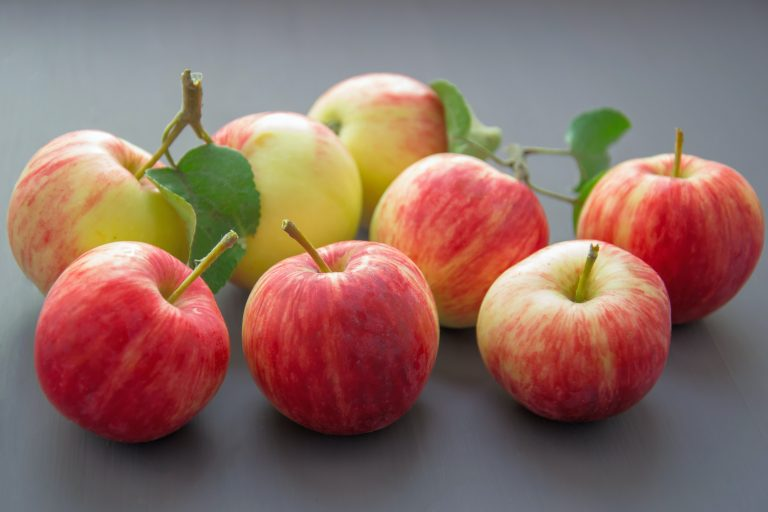

促进消化道健康的营养保健（上）

你的消化道的是否健康在很大程度上取决于你所吃的食物和所采用的饮食方式。当然，个人精神压力状况也会造成消化道的失调。常见的消化道问题包括便秘，胀气，消化不良，腹泻，腹痛等。不论你的肠胃出现哪种不适症状，你都不是形单影只。根据美国疾病预防控制中心（CDC）的数据显示，2016年有2240万美国人被诊断出患有原发性消化系统疾病。这一数字还不包括只有轻度至中度胃肠道（GI）不适并且没有就医的人。他们可能选择了自然疗法或非处方药物疗法。那么我们如何做好肠胃保健呢？
消化道功能失调的预警
呜呜，肚子疼，疼，疼。。。
正常顺畅的排便是胃肠道系统健康状况的第一个指标。我们的大便是否过硬的，正常成形的，不成形的，或是稀释状的；我们每天的排便次数；大便颜色等等，这些信息都反应出了我们的肠胃功能状况。在我们的肠胃功能或疾病进一步恶化之前，我们的胃肠道系统会发出潜在疾病的预警信号。这些预警信号让我们感觉到肠胃的变化，但是很多人却更倾向于忽略它。如果我们能够及时发现胃肠道疾病征兆并立即采取纠正措施，就可以大大降低消化系统疾病的发生率。我们的肠胃道系统内有许多免疫细胞，因此好好维护胃肠道的健康可以提高我们的肠胃免疫力。我们常见的胃肠道疾病包括胃食管胃酸返流症（GERD），溃疡性胃肠炎，肠胃失调综合症，局限性肠炎 (Crohn’s disease)，乳糜泻或麦胶性肠病 (celiac disease)，憩室病 (diverticulosis)，胃肠道癌等。对于消化道疾病的预防，特别是年满50岁或以上的，或有家族肠胃病史的，最好是每五年进行一次胃内镜检查和大肠镜检查可以及早发现和治疗。
选择少吃多餐来缓和胃食管胃酸返流症
美国大约超过70％的老年人口有胃灼热问题。由于胃食管括约肌随着年龄增长和衰老变得松弛， 老年人很容易在饭后，胸口会有灼烧的不适症状。原因是吃的太饱后，胃食道括约肌不能紧闭而导致胃液返流到食道。那如何预防胃酸返流呢？平时保健注意不要短时间内大量进食，因为这样会使消化系统超负荷运作，导致其逐渐削弱消化功能。为达到最佳的消化效果，我们应该减少进餐的量而要增加进餐的次数（每天应吃少量三餐和额外的两次小点），这样可以缓解胃灼热不适的症状。饭后切勿立即躺下；至少要等一小时后才可以躺下。除此之外，某些食物也可能加剧灼热感。避免食用薄荷，西红柿，油炸和高脂肪食物，咖啡，辛辣食物，柑橘类水果，巧克力，酒精饮料等等。如果我们每天可以做到定时定量的进餐，就可以让我们的消化系统发挥最佳功能。
可溶性和不溶性膳食膳食纤维食物促进消化道健康

纤维由可溶性纤维和不溶性膳食纤维组成，两种纤维素均不能被人体消化吸收。那它们存在的意义是什么呢？这两种纤维素在我们的消化系统中执行不同的功用。可溶性纤维溶于水，溶水后会变得粘稠膨涨。因此，想要减肥的人士如果在饮食中添加更多的可溶性纤维，可以帮助减少进食量而达到减肥的目的。可溶性纤维还可以吸附分泌进消化道里的胆固醇，一起从消化道系统中排出，从而有助于降低体内胆固醇水平。可溶性纤维可以帮助延缓饭后大量葡萄糖从消化道进入血液的速度，因此含适量可溶性纤维的饮食，餐后血糖不会升的太快太高。那不溶性纤维素又有什么功用呢？不溶性纤维会在大肠中凝聚，并与其他消化后的食物残留吸附在一起排出体外，使结肠更加干净。多吃不溶性膳食纤维素的食物还有助于加快肠道蠕动，防止便秘。纤维素会吸收肠道内的水分，所以当你的饮食含有大量膳食纤维素时，一定记住要摄入足够的水分。通常高纤维食物来自蔬菜，水果，豆类，全谷类等。更具体一点它包括燕麦，糙米，苹果，梨，橙子，香蕉，豆类，牛油果，西兰花，甜椒，菠菜，西红柿等。现在就开始在你的盘子里添加富含纤维素和色彩缤纷的食物吧。除此之外还有一个关于如何在饮食中增加膳食纤维的问题，正确的方法是逐渐增加高纤维素食物的摄入而不是突然大量的吃，否则。。。否则。。。肠胃会出现胀气的不适症状。
针对肠易激综合症（Irritable Bowel Syndrome)的益生菌疗法
”嗯，这地方逛逛不错“
全世界有大量人群受到肠易激综合症（IBS）的影响，肠易激综合症的起因还并不明确。它的症状包括气胀，腹痛，腹泻，便秘等。肠易激综合症起因可能与某些食物，精神压力，神经系统失调，肠道感染，肠道细菌失衡，体内激素失衡，家族遗传史等有关。可能引起症状的食物包括小麦，牛奶，柑橘类水果，白菜，碳酸饮料等。由于肠易激综合症在医学上还没有确症起因，因此也没有找到有效的治愈方法。营养辅助的益生菌疗法是一个值得尝试的方法。不少研究证明益生菌疗法对改善IBS症状是安全而且有效的。益生菌是对肠道健康有益的细菌，它们有助于分解营养素从而使其更好地被吸收。有益菌还会制造对人体重要的维生素，比如生物素，维生素K，泛酸等。有益菌还可以抑制可能造成肠易激综合症病原菌的过度生长，从而改善症状。为了达到有益菌疗法的最佳效果，我们要考虑有益菌菌株的多样性，有益菌的剂量和益生菌的药丸抗酸性等都会影响益生菌治疗的效果。尽量的使益生菌到达能让它们发挥作用的地方。最近还有一项关于低FODMAP饮食对缓解IBS综合征的研究。低FODMAP饮食是指饮食含有低量的会发酵的寡糖，二糖，单糖和多元醇元素，经研究证明低FODMAP饮食可以有效缓和肠易激综合症的症状。限制摄入含FODMAP高的食物，这些食物包括香蕉，豆类，大蒜，洋葱，芦笋，花椰菜，牛油果，苹果，蜂蜜，豌豆，白菜，腰果，大麦，松饼等等。具体对哪些食物的限制，可能每个人的敏感度都不一样，还是要因人而异。 我建议平时记下吃哪种食物后会有明显的不适症状，下次可以避免。这么多食物其实以营养价值上来说，它们都富含维生素和膳食纤维，都放弃也并不可取。 针对大肠胀气的问题，推荐一款可以帮助排除肠里胀气的非处方药，非常有效，注意不要跟排除胃里胀气的另一种非处方药混淆，服用此类非处方药之前请咨询一下你的家庭医生。（下篇待续。。。）
回到上面